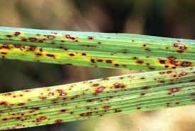
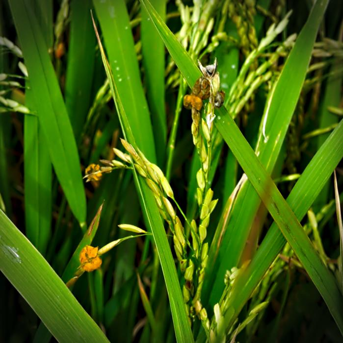
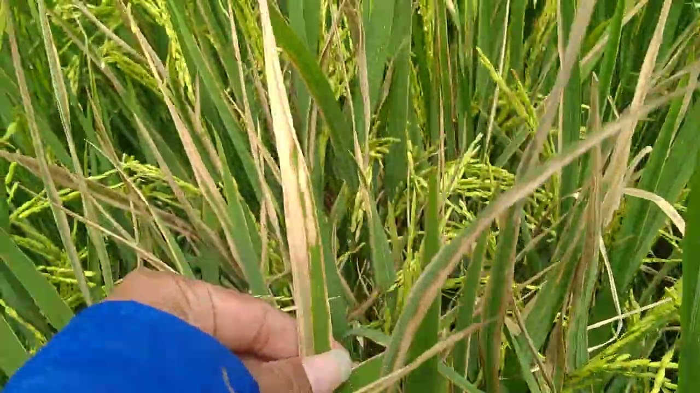

Penjelasan Penanganan Penyakit

1. Brown Spot
Tanaman padi terkena penyakit Brown Spot biasa terjadi disebabkan oleh jamur yang bernama Cochiliobolus Miyabeanus. Jamur tersebut bisa bertahan hidup di dalam benih hingga selama 4 tahaun atau lebih serta bisa menyebar dari tanaman satu ke tanaman lainnya melalui spora yang ada di udara. Penyakit ini paling sering terjadi pada lahan dengan kesalahan pengelolaan kesuburan tanah, terutama dalam hal unsur hara mikro. Penggunaan pupuk silikon bisa digunakan untuk mengendalikan bercak coklat yang terdapat pada tanaman padi serta penggunaan campuran kotoran ternak dan pupuk kimia juga bisa mengurangi keparahannya.
Langkah Pencegahan
- Untuk Tanah yang rendah silikon, tambahkan arang kalsium silikat sebelum penanaman.
- Dapatkan benih anda dari sumber yang bersertifikat jika memungkinkan
- Tanam varietas yang tahan, jika tersedia di daerah anda
- Pastikan pasokan unsur hara dan pantau unsur hara tanag secara teratur
- Pantau tanda-tanda penyakit sejak tahap anakan
Sumber Informasi : link

2. Leaf Smut
Penyakit bercak daun coklat disebabkan oleh Drechslera oryzae (B.de Haan) Subram.et jain. Pada masal dulu sering disebut sebagai jamur Helminthosporium oryzae B.de Haan tersebar di negara-negara penghasil padi di Asia dan di Afrika. Di Indonesia, penyakit ini banyak ditemukan pada pertanaman padi terutama di tanah-tanah marginal yang kurang subur, atau kahat unsur hara tertentu. Beberapa daerah padi gogo rancah di Nusa Tenggara Barat, Bali, Gunung Kidul, Jawa Barat bagian selatan dan Lampung merupakan daerah endemik penyakit ini. Hubungan antara terjadinya penyakit dengan ketersediaan unsur hara tanah sangat erat. Tanaman yang kurang sehat sangat mudah terserang penyakit ini. Pada kondisi tanah yang kahat unsur kalium penyakit bercak coklat dapat menimbulkan kerugian hasil 50 sampai 90 persen. Faktor lain yang berpengaruh adalah sistem drainase yang tidak baik, sehingga mengganggu terserapnya unsur-unsur hara.
Pengendalian
- Budidaya tanaman sehat, penggunaan benih bermutu, perbaikan sarana tata air, pemupukan berimbang, tanam serempak, dan pengaturan waktu tanam yang tepat. Penyakit ini tidak menimbulkan kerugian yang berarti pada pertanaman yang diusahakan dengan cara agronomi yang baik.
- Sanitasi dan pergiliran tanaman. Sifat pathogen dapat bertahan di dalam jerami dan tanah, maka sebaiknya dilakukan sanitasi (jerami diangkat keluar untuk berbagai keperluan lain). Selanjutnya dilakukan pergiliran tanaman dengan tanaman bukan inang penyakit untuk mematikan pathogen didalam tanah.
- Perlakuan biji, dilakukan dengan merendam dalam air panas (hot water treatment) dicampur dengan fungisida. Fungisida yang biasa digunakan adalah tiram, oksiklorida tembaga, atau dapat juga menggunakan formalin.
- Menanam varietas yang tahan atau toleran. Cara ini merupakan upaya pengendalian yang efektif dan efisien. Serta mudah dikombinasikan dengan taktik pengendaian yang lain.
- Alternatif pengendalian terakhir dengan menggunakan fungisida berbahan aktif antara lain: tebukonazol, heksakonazol, belerang, tebukonazo + triflosistrobin, azoksistrobin + difenokonazol. Propikonazol + prokloraz, difenokonazol + Propikonazol, tembaga, tiodozal, metribuzin, mankozab, fenbukonazol, asam khloro bromo iso sianurit, propineb flupikolid, ziram.
Sumber Informasi : link

3. Bacterial Leaf Blight
Bacterial Leaf Blight atau hawar daun bakteri atau juga bisa disebut dengan penyakit kresek pada tanaman padi. Penyakit ini tersebar luas di pertanaman padi sawah serta bisa menyebabkan penurunan hasil panen hingga 36%. Penyakit kresek biasa terjadi pada saat musim penghujan atau dalam kondisi lembab dengan kelembaban > 75%, terutama dengan sawah yang selalu tergenang dengan pemupukan N yang tinggi. Bakteri yang menyebabkan penyakit ini yaitu bakteri Xanthomonas campestris pv. Oryzae Dye.
Langah Penanganan
- Sanitasi Lingkungan
- Perbaikan cara bercocok tanam
- Penyemprotan Bakterisida anjuran yang efektif dan diizinkan secara bijaksana berdasarkan hasil pengamatan
- Pemanfaatan agensia hayati Corynebacterium
Sumber Informasi : Link